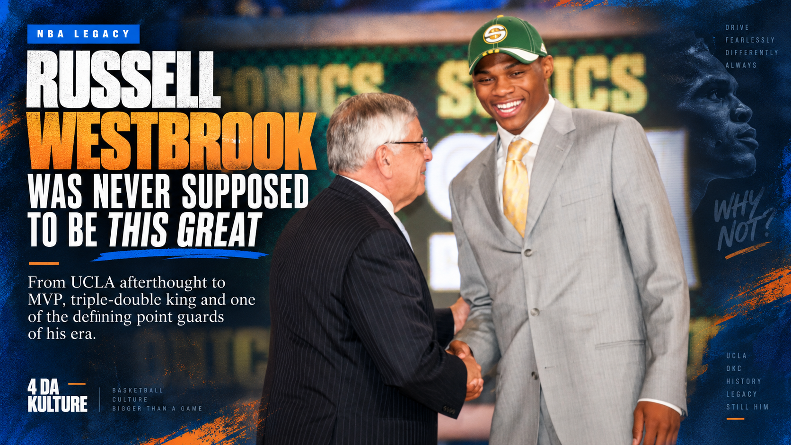

Cover Story
4 Da Kulture’s 2026–27 NBA Season Preview
The moves, pressure, new eras and teams trying to hold on. The season-preview magazine is now a growing digital issue.
The moves, pressure, new eras and teams trying to hold on. The season-preview magazine is now a growing digital issue.
The league enters 2026 with old powers fighting back, loaded contenders going all-in and young quarterbacks waiting on their moment.
Enter 4DK NFL →Five positions. Three choices each. No do-overs. Build your all-time lineup and let 4DK grade the fit.
Play the Challenge →Hip-hop, R&B, regional sound, album debates and the records staying in rotation.
Enter 4DK Music →
NBA LEGACY FROM AFTERTHOUGHTFrom UCLA afterthought to MVP, triple-double king and one of the defining point guards of his era.
Read → OFFSEASON WINNER
SAME FREAK.
OFFSEASON WINNER
SAME FREAK.Giannis leaves Milwaukee for Miami — and steps into a situation built to put him back in the middle of the MVP conversation.
Read → FRANCHISE RETROSPECTIVE
THE PARTY'S
FRANCHISE RETROSPECTIVE
THE PARTY'SHow a championship window slowly closed — from the 2021 title to a 32–50 season and the end of an era.
Read →